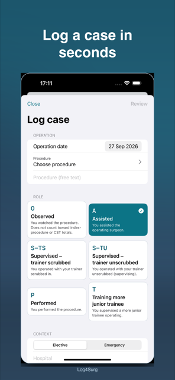
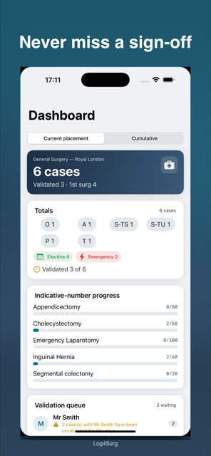
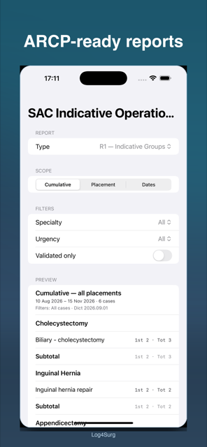
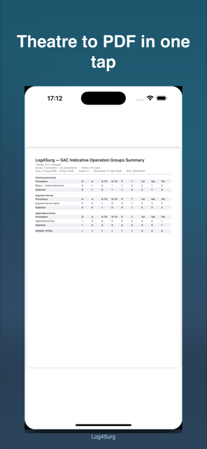

The UK surgical logbook that is ARCP-ready — log a case in under 30 seconds.
Log4Surg is a modern, offline-first operative logbook for UK surgical trainees. Fast case entry with exact UK role terminology, correct SAC indicative-group and consolidation reports with the counting rules ARCP panels expect, validation tracking, and one-tap PDF / CSV export. No account, no developer server — your logbook stays on your device and in your own iCloud Drive.
Case entry, dashboard, SAC report preview, and one-tap PDF export




Four tabs — Cases, Dashboard, Reports, More. Case entry is always one tap away via the persistent “+” action. Everything works in airplane mode, including in hospital basements.
Search-as-you-type procedure dictionary with favourites and recents, six large role cards with the exact curriculum labels, elective/emergency split, hospital and supervisor pickers with smart defaults, and a review sheet before every save.
Totals by role, specialty and urgency, indicative-number progress bars, a Core Training card counting S-TS/S-TU/P toward the >120-cases/year guide, the validation queue, and ARCP readiness — per placement or cumulative.
Per-case validated status with history. When a supervisor has > 25 unvalidated cases, or any case waits > 30 days, the app raises a nudge — then composes the request message for you to send.
Print-ready PDFs with trainee header, derived date range, generation timestamp, dictionary version and the 1st-Surg. definition — plus grouped-summary and raw-cases CSVs through the standard share sheet.
There is no field for patient names, addresses, NHS numbers or photos — the database schema has no such columns. Notes carry a persistent privacy warning with a name-pattern nudge on save, and a share-safe mode strips identifiers.
No accounts, no servers, no analytics SDKs. Automatic backup of the logbook to your own iCloud Drive folder with > 14-day backup-health warnings, manual export to Files, and confirmed restore.
Searchable, filterable list grouped by month — role chips, urgency dots, validated ticks, PIN-gate option.
Totals, indicative progress, core-training tally, validation queue, ARCP readiness.
Pick report → scope → preview → PDF/CSV. Date ranges derived from your cases, never hardcoded.
Profile, placements, consultants, hospitals, favourites, import/export, backup, appearance, lock.
Honest labelling — what Log4Surg is not:
Every report is computed live from your cases by one audited aggregation function — never cached, never hand-edited — and verified against golden fixtures. Preview, PDF and CSV always show identical numbers.
| Report | What it is | Purpose |
|---|---|---|
| R1 | SAC Indicative Operation Groups Summary — counts by indicative group per placement + cumulative, with 1st Surg. column | The ARCP upload to ISCP |
| R2 | Consolidation Report per specialty + Summary Sheet — procedure-level counts, validated counts, consultant sign-off block | CST applications / ARCP pack |
| R3 | Operation Part Frequency — how often each operation part was done, with case denominator stated | Depth of experience |
| R4 | Validation Worksheet — unvalidated cases per supervisor, days waiting, threshold flags | Chasing sign-off |
| R5 | Procedure by Trainer — cases grouped by consultant / supervisor | Appraisal conversations |
| R6 | Core Training Progress — yearly tally vs the >120 guide (S-TS/S-TU/P only) | CT1 / CT2 deanery guidance |
P + S-TS + S-TU + T). Observed (O) cases are listed for completeness
and excluded from index-procedure and CST-eligible totals. Free-text procedures appear under
“Uncoded procedures” so nothing is silently missing.
Placement setup, CSV import mapping, backup health and export guides are built into the app (More → About / Settings). For anything else, reach us below.
No developer server, no accounts, no analytics. Your logbook stays on your device and in your own iCloud Drive. No patient names — by design, the app cannot store them.
View Privacy PolicyLog4Surg uses Apple’s Standard Licensed Application End User License Agreement.
View Apple Standard EULAQuestions, suggestions, found a bug, or need help with import / backup / export? We’d love to hear from you.
contact@m-pax.net